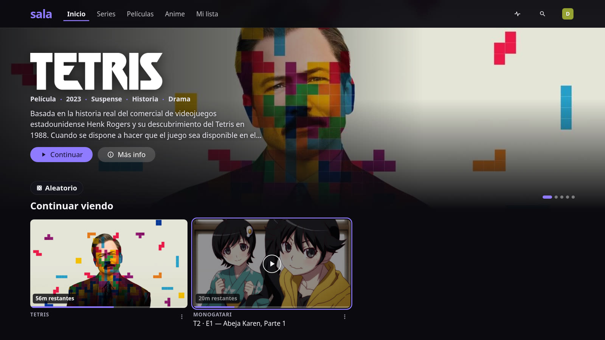
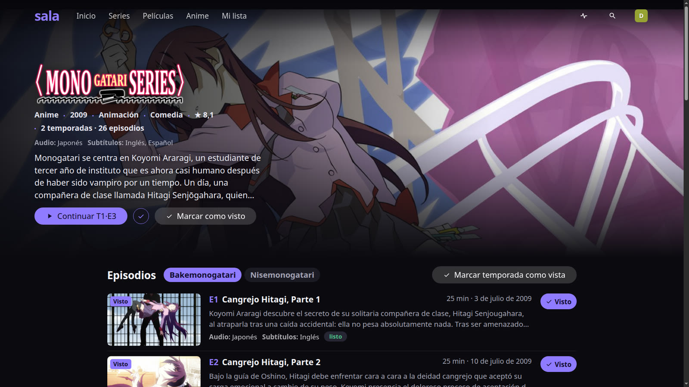
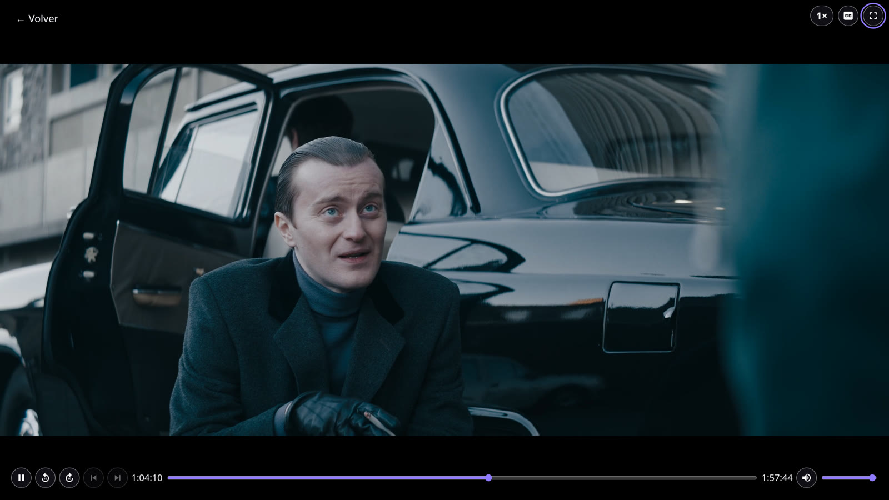
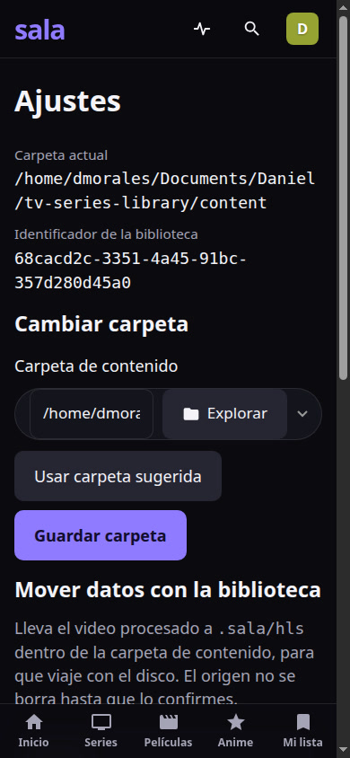
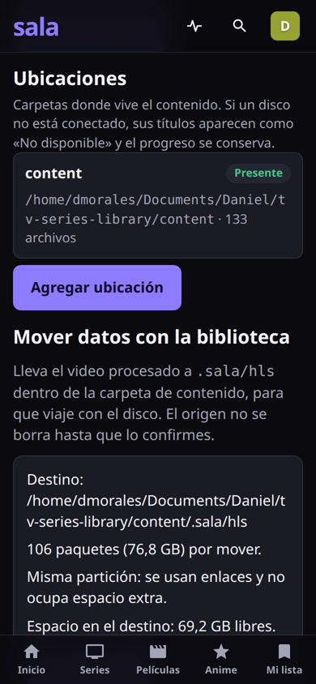

Tus películas, series y anime, en la TV, el celular o la PC, desde una laptop y tu WiFi.
MKV, H.264 de 10 bits, HEVC, audio FLAC y subtítulos ASS: Chrome y los navegadores de TV no los abren, y no dejan cambiar el doblaje.
Nombres como [Coalgirls] Bakemonogatari - 03 (1920x1080 Blu-Ray FLAC). Sin portadas, sin sinopsis, sin saber en qué episodio ibas.
Suscripciones que rotan el catálogo, o servidores como Plex/Jellyfin con cuentas y demasiada configuración para una familia.
Y si renombras los archivos para ordenarlos, el torrent deja de compartirlos.
Dejas los videos en una carpeta. sala los reconoce, les pone portada, sinopsis y reparto, los prepara para cualquier pantalla y los sirve por tu WiFi.


Logo, sinopsis, calificación, temporadas con nombre propio, “Continuar T1·E3”, marcar visto por episodio, por temporada o el título entero. Idiomas disponibles a la vista antes de darle play.
Un watcher ve cada archivo nuevo. Espera a que la descarga termine y lo valida con ffprobe.
Deduce título, temporada y episodio. Separa openings y endings como extras.
Portadas, sinopsis y reparto, una sola vez. Todo queda guardado en local.
Video, cada pista de audio y subtítulos WebVTT, listos para cualquier navegador.
TV, celular, tablet o PC en la misma WiFi. Retoma donde quedaste.
Backend: Node.js 24 + Fastify, SQLite nativo (node:sqlite), ffmpeg.
Frontend: Vue 3 + Vite, player propio sobre hls.js.
Datos: SQLite con FTS5 para la búsqueda. Sin servidores extra.
S5 - 03, V - 02v2 (números romanos), carpetas S1/S01, subcarpetas a cualquier profundidad.TMDB no tiene “Bakemonogatari”: es la temporada 1 de Monogatari con 12 episodios, y los 13–15 están en especiales.
sala usa los ordenamientos alternativos de TMDB (orden de emisión original) y arma la temporada correcta con sus 15 episodios, separando 19 extras OP/ED/PV. Cero pendientes.
Y los torrents que preasignan el tamaño final no engañan: si ffprobe falla, espera y reintenta.

Cada video se convierte a HLS con una variante por pista de audio. Lo que ya es compatible se copia sin recodificar; lo de 10 bits o HEVC pasa a H.264.
hasta el primer segmento: ves mientras procesa
más rápido que tiempo real al recodificar
para preparar un video compatible al darle play
transcodificación en vivo en cada reproducción


Metadata e imágenes en SQLite y en disco. Fuentes, iconos y scripts empaquetados: cero CDNs. Funciona con el router sin internet.
El procesado sobrevive a reinicios y se reanuda. Los errores se reintentan al arrancar. Un watchdog mata procesos colgados y no quedan ffmpeg huérfanos.
Lo regenerable vive en una caché LRU (20 GB por defecto). Antes de escribir, comprueba el espacio libre y nunca llena el disco.
rendimiento con 2 trabajos × 8 hilos (medido)
fuentes de subtítulos deduplicadas
procesa en segundo plano sin trabar la laptop
pausar y reanudar desde el panel Actividad
| Decisión | Descartado | Elegido y por qué |
|---|---|---|
| Plataforma propia | Jellyfin / Plex | Experiencia a medida, sin cuentas y sin curva de configuración. |
| Procesar al importar | Transcodificar en vivo | Reproducción instantánea y adelantar sin esperas; la CPU trabaja una sola vez. |
| Búsqueda | Elasticsearch (1–2 GB RAM) | SQLite FTS5: autocompletado en milisegundos, cero servicios extra. |
| Arranque en Linux | Docker Compose | Servicio systemd de usuario: menos piezas, arranca con el equipo. |
| Espacio en disco | Copiar todo al importar | Copia perezosa + caché LRU: solo ocupa lo que realmente se ve. |
| Base de datos | Módulos nativos de Node | node:sqlite: sin compilar nada, listo para un instalador de Windows. |
commits con Conventional Commits
tareas y subtareas cerradas
tests automáticos en verde (611 backend · 243 web)
migraciones de base de datos validadas sobre copia real
Anime en Blu-ray de 10 bits con FLAC, películas, series por carpetas, torrents a medio descargar y lotes de distintos grupos mezclados en una misma temporada.
El player, el volumen y la navegación con teclado se verificaron contra Chrome real, con capturas guardadas como evidencia en docs/progress/.
Tu biblioteca, con la experiencia de un servicio de streaming.
En tu casa, bajo tus reglas.